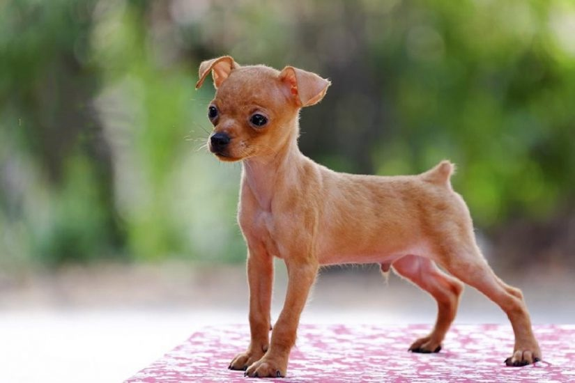
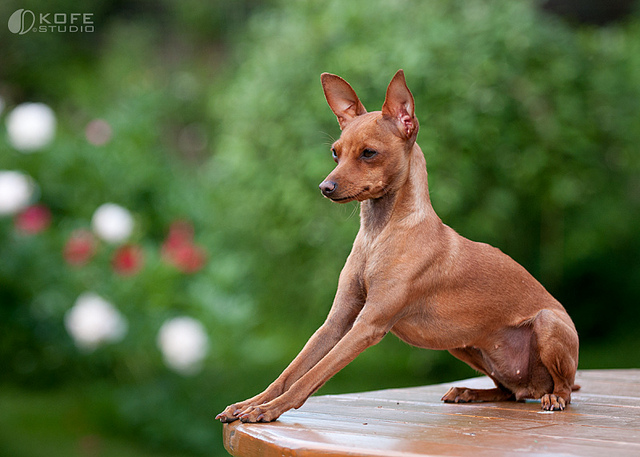
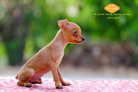

Chó Phốc hay chó Fox, chó Phốc hươu (Miniature Pinscher) là một giống chó cảnh, có nguồn gốc ở Đức, được lai tạo từ giống chó sục và German Pinscher. Trong lịch sử, chó Phốc được sử dụng để săn chuột vì kích thước nhỏ gọn và sự nhanh nhẹn của mình. Ngày nay, với tính cách tình cảm và thông minh chúng đã trở thành một trong những loài chó được yêu quý trong các gia đình. Sự ưu điểm của chó Phốc được thể hiện trong các công việc liên quan đến canh gác, các cuộc thi thố cần có sự nhanh nhẹn.
Chó Phốc có tên gọi khác là Zwergpinscher, hay Min Pin. Tên Zwergpinscher trong tiếng Đức có nghĩa là "chú lùn", sở dĩ giống chó lâu đời này vốn được nuôi trong các trang trại, gia đình, để săn bắt những loài vật nhỏ. Khác với quan niệm bình thường, giống chó phốc và Doberman là hai giống chó khác nhau hoàn toàn mặc dù chúng có ngoại hình tương đối giống nhau. Chó phốc là giống chó lâu đời hơn Doberman rất nhiều. Chó phốc được nuôi nhiều ở Việt Nam, phần lớn vì chúng là loài chó dễ nuôi và phù hợp với điều kiện căn hộ nhỏ, ngoài ra giá một chú chó Phốc tương đối mềm so với nhiều loại chó cảnh khác.
Chó Phốc là giống chó đặc biệt ương ngạnh và bướng bỉnh. Ngoài ra, chúng còn rất can đảm và thích sủa nhiều. Nếu người lạ vào trong nhà, lập tức chúng sẽ sủa ầm ĩ lên để báo cho người nhà biết. Chúng trung thành với chủ, tình cảm và luôn cảnh giác với vật lạ. Luôn tràn trề sinh lực và hiếu động. Thông minh và dũng cảm là những đức tính của loài chó nhỏ bé này. Mặc dù có kích thước khiêm tốn nhưng tập tính của chúng là bảo vệ. Một số con có thể rất hung tợn đối với chó khác, nhưng nói chung chó Phốc tương đối thân thiện với các loại vật nuôi trong nhà và trẻ nhỏ. Để cho dễ hoà nhập nên cho chúng tiếp xúc vớí các loại chó và súc vật khác từ lúc còn nhỏ.
